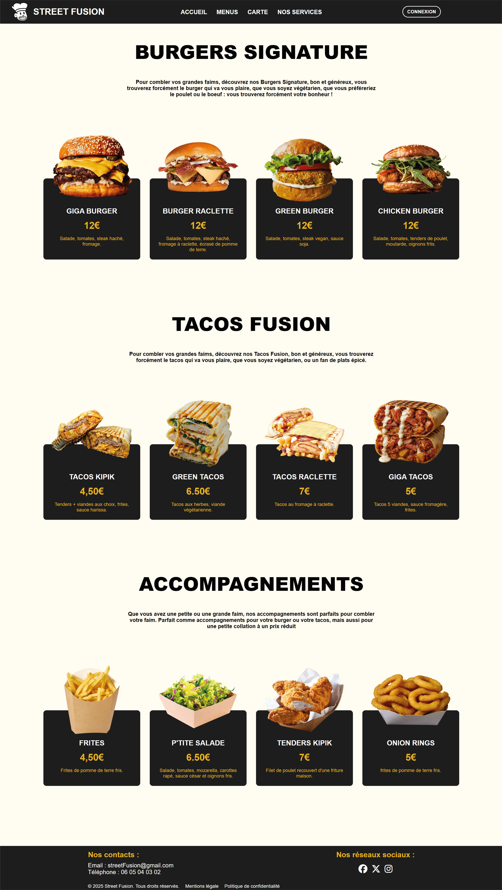

Street Fusion est un projet fictif de création de site web pour un foodtruck, réalisé en une semaine et en groupe. Chaque membre avait une tâche précise. De mon côté, j’étais en charge de la création de la page menu ainsi que du logo de l’enseigne.
L’ambiance générale repose sur une palette jaune et noire, en lien avec l’univers du foodtruck. Pour le logo, j’ai voulu créer un visuel simple et convivial en représentant un chef souriant avec une grillz, faisant référence à la culture street et aux rappeurs américains, tout en restant cohérent avec l’identité visuelle du site.
Le jaune permet de mettre en valeur les éléments importants comme les boutons et les mots clés. Nous avons opté pour un style moderne, avec des bords arrondis, des couleurs vives mais non agressives et une mise en page originale, notamment pour la présentation des menus.
Voir le site